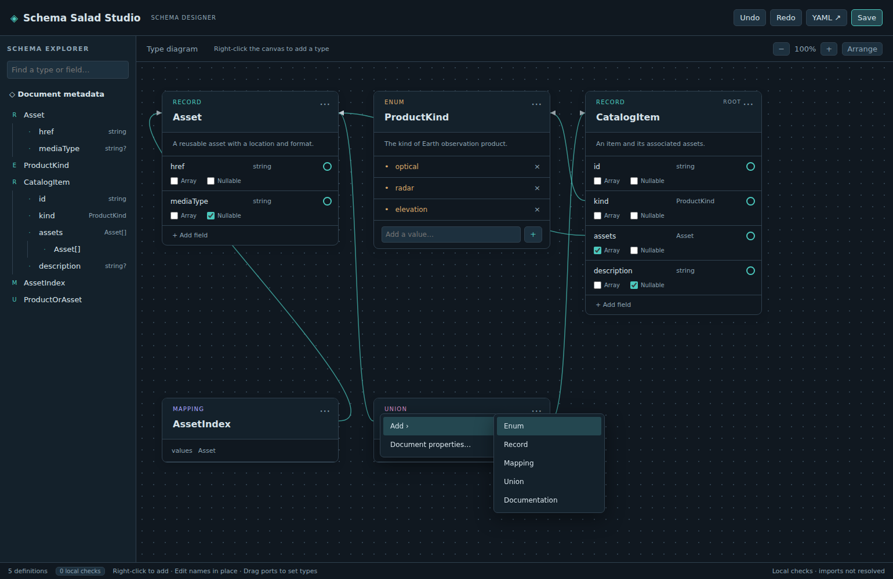

Schema Salad Studio
Schema Salad Studio 0.1.0 is the first public release of a VS Code visual editor for Schema Salad definitions. Create and edit type cards, connect references, and set typed defaults while keeping YAML as the source of truth.

Choose your starting point
| Your goal | Documentation |
|---|---|
| Learn by building a small schema | Tutorial: create your first schema |
| Install the extension | Install and open |
| Make changes to an existing schema | Edit on the canvas |
| Configure a default value | Set a field default |
| Look up supported features and limits | Schema support and field controls |
| Understand the design | The YAML document model and save-time ordering |
| Contribute | Develop and package and maintain the docs |
The installed extension works offline and requires VS Code 1.90 or later. It provides local structural checks; full Schema Salad validation remains a separate part of your workflow.
All features described here belong to 0.1.0. See the changelog for release history.